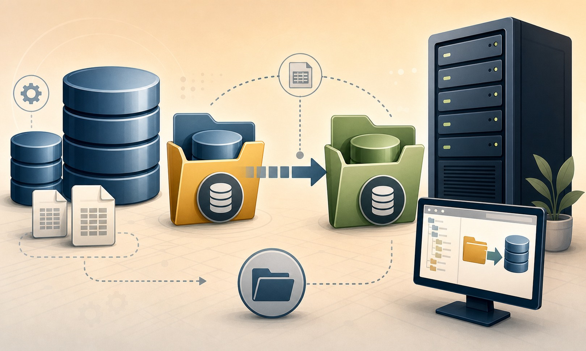

{kind=link}

2 – Feche a aba da Query aberta para executar o comando acima e em seguida, coloque o banco com status “Offline”. 2.1 – Clique com o botão direito sobre o banco que deseja colocar Offline. 2.2 – Selecione a opção “Tasks” => “Take Offline” 3 – Faça a cópia física do arquivo de dados “datafile.mdf”, para o local de destino. 4 – Abra uma nova query clicando no botão “New Query” e digite a instrução SQL seguir: ALTER DATABASE Teste --Nome do banco MODIFY FILE(NAME=Teste, -- Nome lógico do arquivo de dados FILENAME = 'E:MSSQL2005Teste.mdf')-- Novo caminho do datafile. (Caminho somente de exemplo) 5 – Feche a aba da Query aberta para executar o comando acima e em seguida, coloque o banco com status “Online”. 5.1 – Clique com o botão direito sobre o banco que deseja colocar Online. 5.2 – Selecione a opção “Tasks” => “Bring Online” 6 – Novamente, execute a instrução abaixo, para certificar-se da alteração. Use Teste -- Nome do banco GO EXEC sp_helpfile GO Checklist pós execução
É interessante e necessário checar sempre a efetividade de qualquer atividade executada em um ambiente de banco de dados (como em qualquer atividade, independente da área).
- Verificar se a alteração foi executada com sucesso e se o banco está com o Status “Online”.
- Se possível, realizar teste com a aplicação que acessa o database em questão, para validar o funcionamento.
Plano de retorno
- Se independente do sucesso ou não da atividade, houver a necessidade de retornar o ambiente como estava no momento anterior à movimentação do datafile, basta seguir exatamente os mesmos passos, alterando o caminho para o mesmo caminho que estava antes da mudança.
Espero que seja útil e possa ajudar...
Att.:
Edvaldo Castro
MCITP Database Administrator on SQL SERVER 2005
MCTS SQL SERVER 2005
Checklist pós execução
É interessante e necessário checar sempre a efetividade de qualquer atividade executada em um ambiente de banco de dados (como em qualquer atividade, independente da área).
- Verificar se a alteração foi executada com sucesso e se o banco está com o Status “Online”.
- Se possível, realizar teste com a aplicação que acessa o database em questão, para validar o funcionamento.
Plano de retorno
- Se independente do sucesso ou não da atividade, houver a necessidade de retornar o ambiente como estava no momento anterior à movimentação do datafile, basta seguir exatamente os mesmos passos, alterando o caminho para o mesmo caminho que estava antes da mudança.
Espero que seja útil e possa ajudar...
Att.:
Edvaldo Castro
MCITP Database Administrator on SQL SERVER 2005
MCTS SQL SERVER 2005